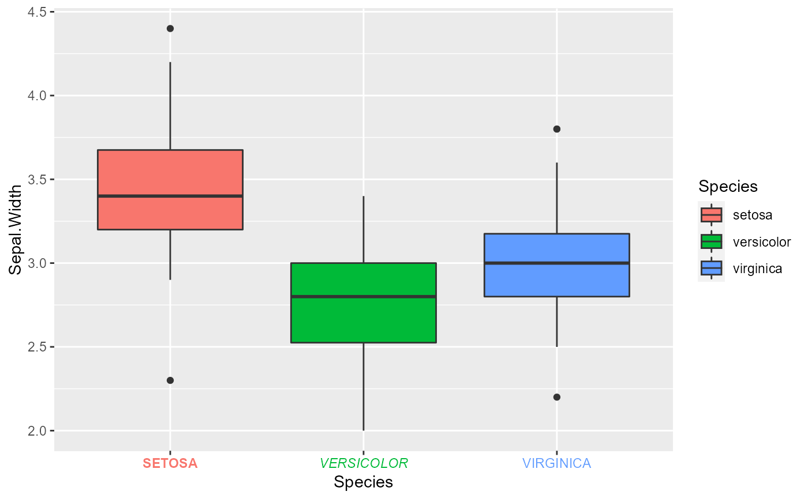
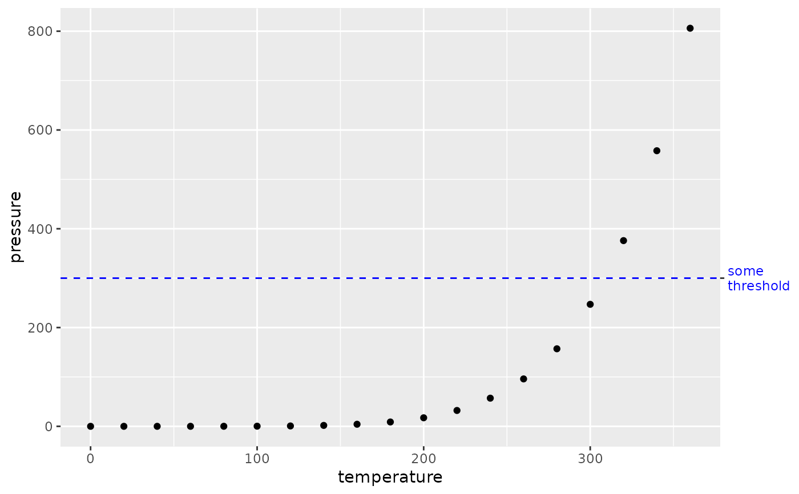

This axis allows a greater degree of control than the default axes guides. In
particular, this axis allows setting break positions and labels independently
from the scale and is not bound by the same constraints as secondary axes.
Additionally, label attributes may be set in parallel to the labels
themselves, circumventing the unsupported vectorised input to
element_text().
guide_axis_manual( title = waiver(), breaks = waiver(), labels = waiver(), label_family = NULL, label_face = NULL, label_colour = NULL, label_size = NULL, label_hjust = NULL, label_vjust = NULL, label_lineheight = NULL, label_color = NULL, label_margin = NULL, check.overlap = FALSE, angle = NULL, n.dodge = 1, order = 0, colour = NULL, color = NULL, trunc_lower = NULL, trunc_upper = NULL, position = waiver() )
| title | A character string or expression indicating a title of guide.
If |
|---|---|
| breaks | One of the following ways to parametrise the tick and label positions:
|
| labels | One of the following ways to dictate the labels:
|
| label_family, label_face, label_colour, label_size, label_hjust, label_vjust, label_lineheight, label_color, label_margin | Arguments passed down to the label constructor. See
|
| check.overlap | silently remove overlapping labels, (recursively) prioritizing the first, last, and middle labels. |
| angle | Compared to setting the angle in |
| n.dodge | The number of rows (for vertical axes) or columns (for horizontal axes) that should be used to render the labels. This is useful for displaying labels that would otherwise overlap. |
| order | Used to determine the order of the guides (left-to-right, top-to-bottom), if more than one guide must be drawn at the same location. |
| colour | A |
| color | A |
| trunc_lower | The lower and upper range of the truncated axis:
|
| trunc_upper | The lower and upper range of the truncated axis:
|
| position | Where this guide should be drawn: one of top, bottom, left, or right. |
An axis_manual guide class object.
Other axis-guides:
guide_axis_logticks(),
guide_axis_minor(),
guide_axis_nested(),
guide_axis_truncated()
ggplot(iris, aes(Species, Sepal.Width)) + geom_boxplot(aes(fill = Species)) + guides(x = guide_axis_manual( label_colour = scales::hue_pal()(3), label_face = c("bold", "italic", "plain"), labels = toupper ))# Using the manual axis to annotate some specific point ggplot(pressure, aes(temperature, pressure)) + geom_point() + geom_hline(yintercept = 300, linetype = 2, colour = "blue") + guides(y.sec = guide_axis_manual(breaks = 300, labels = "some\nthreshold", label_colour = "blue"))